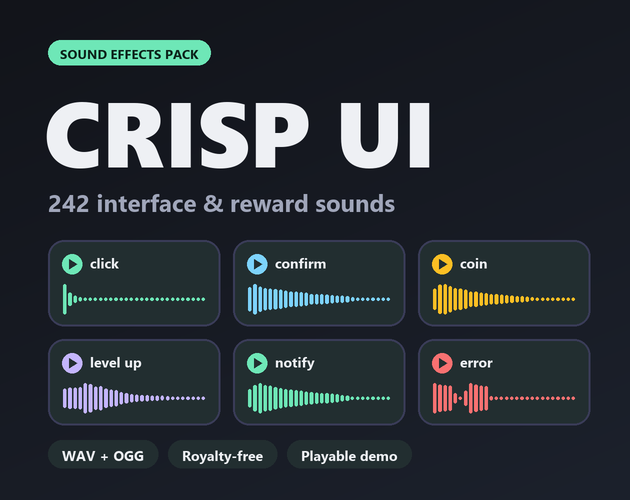

Crisp UI: 242 UI sound effects for games
Crisp UI is a pack of 242 sound effects for game menus, HUDs, rewards and pickups: clicks, hovers, toggles, confirm and error feedback, notifications, menu transitions, reward jingles, coins and text blips. Every sound comes as WAV and OGG.

- Contents
- 242 sounds in 9 folders
- Formats
- WAV (44.1 kHz, 16-bit, stereo) and OGG Vorbis
- Price
- $4.99 on itch.io (anipixels.itch.io/crisp-ui)
- Free sampler
- 20 sounds, free on itch.io (anipixels.itch.io/crisp-ui-free)
- Licence
- Royalty-free for commercial and non-commercial projects, no credit required, no reselling or redistribution of the files
- Made by
- Anipixels, with procedural code written with an AI assistant (Claude)
What is included
- Buttons (56) - back x2, button press, button release, click bubble x3, click glass x5, click hard x5, click metal x3, click plastic x3, click soft x5, click wood x5, hover soft x4, hover tick x4, pop down x5, pop up x5, select x2, tap pad x3
- Toggles (28) - checkbox off, checkbox on, dropdown close, dropdown open, knob turn x3, radio select, scroll tick x5, slider tick x5, stepper down, stepper up, switch off, switch on, tab switch x4, toggle off, toggle on
- Feedback (33) - cancel x5, confirm x6, delete, denied x2, error x5, loading done, loading tick x2, locked, receive, redo, refresh, save game, send, undo, warning x4
- Notifications (24) - alert urgent x2, countdown x3, countdown go, countdown tick, message in x2, message out x2, notification x8, reminder soft x2, timer end, timer tick x2
- Menus (20) - drawer close, drawer open, menu close, menu open, page turn x2, panel slide in, panel slide out, popup close, popup open, swipe x5, whoosh short x3, zoom in, zoom out
- Rewards (22) - achievement, badge, chest open, combo up x4, daily reward, fail jingle, level up, quest complete, rank up, star x3, streak, success jingle, trophy, unlock, xp gain x3
- Pickups (25) - coin classic, coin classic high, coin classic low, coin ping x3, coins drop x3, energy pickup, gem x4, heal, heart pickup, item drop x2, item pickup, key pickup, powerup, shield up, star pickup, token x2
- Shop (10) - cart add, cart remove, craft, equip, not enough, purchase, purchase small, sell, unequip, upgrade
- Text (24) - dialog advance, dialog end, text blip high x3, text blip low x3, text blip mid x3, typing x10, typing backspace, typing enter, typing space
Names are the file names without the trailing number; "x5" means five numbered files of that sound (variations, or tuned steps such as star 1-2-3).
Details
- 242 sounds in 9 folders.
- Sounds whose names end in _01, _02, _03 are variations: pick one at random so repeated clicks and pickups do not sound robotic.
- hover_*, scroll_tick, knob_turn and loading_tick are mixed quiet on purpose, because they play constantly.
- star_01 to star_03, combo_up_01 to combo_up_04 and countdown_3, _2, _1, countdown_go are tuned to climb in order.
- Pairs are tuned to match: toggle_on/off, checkbox_on/off, menu_open/close, popup_open/close, panel_slide_in/out, drawer_open/close, zoom_in/out, undo/redo, cart_add/remove, equip/unequip.
Formats and engines
- WAV: 44.1 kHz, 16-bit, stereo (for editing and highest quality).
- OGG Vorbis: small files, ready for Godot, Unity, GameMaker and web.
- Every sound is loudness-matched, starts on its first sample (no dead air) and peaks at or below -1 dBFS.
Works with: Any engine or tool that plays WAV or OGG files. The pack's README names Godot, Unity, GameMaker and web.
Free sampler
The free sampler has 20 of the 242 sounds as WAV and OGG: 5 button sounds, 2 toggles, 3 feedback sounds, 1 notification, 2 menu sounds, 2 rewards, 2 pickups, 1 shop sound and 2 text sounds.
The free itch.io page also hosts the playable browser demo of the full pack.
Licence
Use the sounds in any number of commercial or non-commercial projects (games, apps, websites, videos, streams, game jams). Edit, layer, pitch or otherwise modify them. Credit is appreciated but never required. You may not resell, redistribute or give away the sounds themselves, on their own or as part of another sound library or asset pack, modified or not, and you may not claim them as your own original work in a sound library.
This is a summary of the LICENSE.txt inside the download. The sampler's copy of that file: crisp-ui.txt.
Questions
Can I use Crisp UI in a commercial game?
Yes. The licence allows any number of commercial or non-commercial projects: games, apps, websites, videos, streams and game jams.
Do I have to give credit?
No. Credit is appreciated but never required.
Which engines does it work with?
Any engine or tool that plays WAV or OGG files. The pack's README names Godot, Unity, GameMaker and web.
Can I edit the sounds?
Yes. You may edit, layer, pitch or otherwise modify them.
Can I try it before buying?
Yes. The free itch.io page has a playable browser demo and a free sampler with 20 of the 242 sounds as WAV and OGG. The same 20 sampler files can be played on this site's UI sound board.
How is Crisp Cozy different from Crisp UI?
Crisp UI is clean and neutral: clicks, glass, bright chimes. Crisp Cozy is warm and rounded: wood, kalimba, bubbles, paper, and it adds a Cozy Actions folder. No sound appears in both packs. Measured across both packs, the average spectral centre of Crisp Cozy is about 860 Hz against 1910 Hz for Crisp UI, and its sounds fade in more gently (median attack 10 ms against 2 ms). The folder names match, so you can swap one pack for the other or mix them.
Was AI used to make it?
Yes, for the code. Every sound is synthesised from scratch by code that was written with Claude, an AI assistant. No recorded samples and no AI audio-generation models were used.
Screenshots


How it was made
Every sound is synthesised from scratch by code that was written with Claude, an AI assistant. No recorded samples and no AI audio-generation models were used.
Crisp UI is part of the Crisp Everything Bundle: all 12 Crisp packs for $17.99 instead of $70.88 bought one by one. View the bundle on itch.io